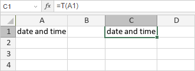
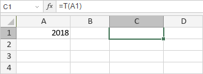

T Funkcija
T funkcija je jedna od funkcija za tekst i podatke. Koristi se da proveri da li je vrednost u ćeliji (ili korišćena kao argument) tekst ili ne. Ako vrednost nije tekst, funkcija vraća praznu vrednost. Ako je vrednost/argument tekst, funkcija vraća istu tekstualnu vrednost.
Sintaksa
T(value)
T funkcija ima sledeći argument:
| Argument | Opis |
|---|---|
| value | Vrednost koju želite da testirate. |
Napomene
Kako primeniti T funkciju.
Primeri
Postoji argument: value = A1, gde je A1 datum i vreme. Funkcija vraća datum i vreme.

Ako promenimo podatke u A1 sa teksta u numeričku vrednost, funkcija vraća praznu vrednost.
